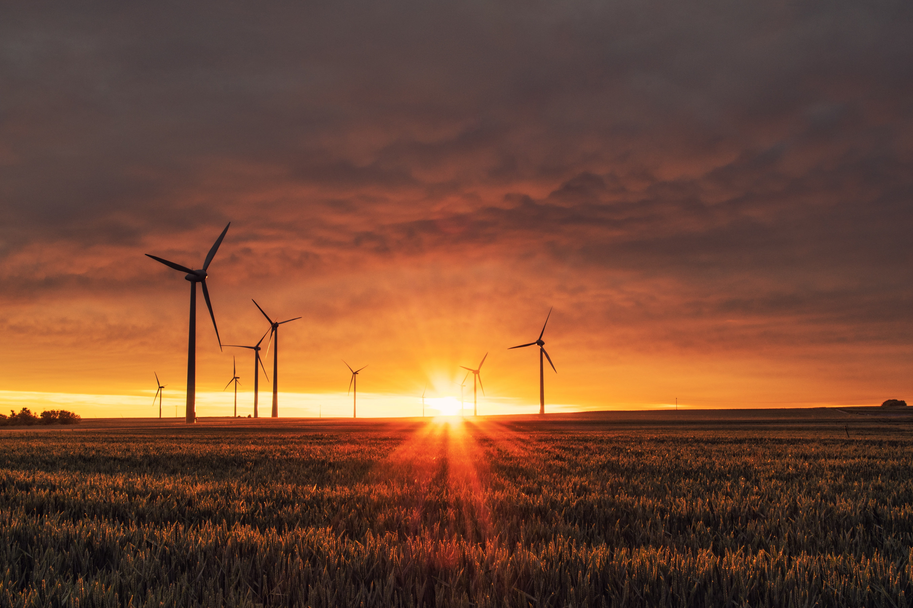
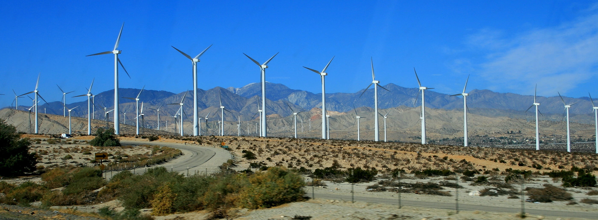
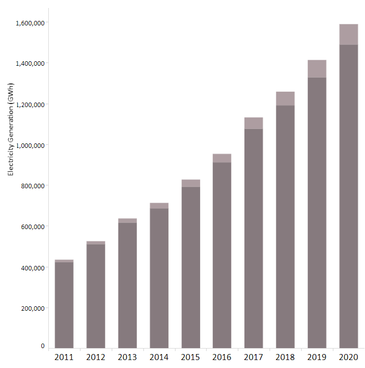

WIND ENERGY
Wind Energy:
Wind energy offers many advantages, which explains why it's one of the fastest-growing energy sources in the world. To further expand wind energy’s capabilities and community benefits, researchers are working to address technical and socio-economic challenges in support of a decarbonized electricity future..
Wind is used to produce electricity by converting the kinetic energy of air in motion into electricity. In modern wind turbines, wind rotates the rotor blades, which convert kinetic energy into rotational energy. This rotational energy is transferred by a shaft which to the generator, thereby producing electrical energy.
Typical cost is $1.3 million per megawatt (MW) of electricity-producing capacity. Most commercial wind turbines have a capacity of 2-3 MW, but offshore turbines can be as large as 12 MW. Cost increases as turbine size increases, though there are benefits to using fewer, larger turbines – complexity and construction of the overall farm site is greatly reduced with fewer and larger turbines.

Social Impacts of Wind Energy
Wind power creates good-paying jobs. There are over 120,000 people working in the U.S. wind industry across all 50 states, and that number continues to grow. According to the U.S. Bureau of Labor Statistics, wind turbine service technicians are the second fastest growing U.S. job of the decade. Offering career opportunities ranging from blade fabricator to asset manager, the wind industry has the potential to support hundreds of thousands of more jobs by 2050.
Wind power is a clean and renewable energy source. Wind turbines harness energy from the wind using mechanical power to spin a generator and create electricity. Not only is wind an abundant and inexhaustible resource, but it also provides electricity without burning any fuel or polluting the air. Wind continues to be the largest source of renewable power in the United States, which helps reduce our reliance on fossil fuels. Wind energy helps avoid 329 million metric tons of carbon dioxide emissions annually – equivalent to 71 million cars worth of emissions that along with other atmospheric emissions cause acid rain, smog, and greenhouse gases.

Electricity Generation Throught Wind Energy
Wind power has grown rapidly since 2000, driven by R&D, supportive policies and falling costs. Global
installed wind generation capacity – both onshore and offshore – has increased by a factor of 98 in the
past two decades, jumping from 7.5 GW in 1997 to some 733 GW by 2018 according to IRENA’s data. Onshore
wind capacity grew from 178 GW in 2010 to 699 GW in 2020, while offshore wind has grown proportionately
more, but from a lower base, from 3.1 GW in 2010 to 34.4 GW in 2020. Production of wind power increased
by a factor of 5.2 between 2009 and 2019 to reach 1412 TWh.
Both onshore and offshore wind still have tremendous potential for greater deployment and improvement,
globally.
Wind turbine capacity has increased over time. In 1985, typical turbines had a rated capacity of 0.05 MW
and a rotor diameter of 15 metres. Today’s new wind power projects have a turbine capacity in the 3-4 MW
range onshore and 8-12 MW offshore.
The amount of power that can be harvested from wind depends on the size of the turbine and the length of
its blades. The output is proportional to the dimensions of the rotor and to the cube of the wind speed.
Theoretically, when wind speed doubles, the wind power potential increases by a factor of eight.
Wind turbines first emerged more than a century ago. Following the invention of the electric generator
in the 1830s, engineers started attempting to harness wind energy to produce electricity. Wind power
generation took place in the United Kingdom and the United States in 1887 and 1888, but modern wind
power is considered to have been first developed in Denmark, where horizontal-axis wind turbines were
built in 1891 and a 22.8 metre wind turbine began operation in 1897. The modern wind power sector
emerged in the 1980s.
